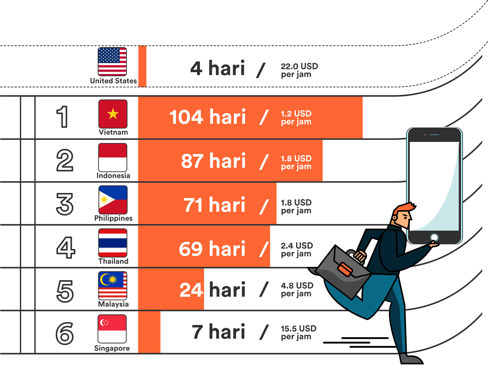

Dari yang termurah sampai termahal:
iPhone dimulai dari enginer-enginer di U.S, dimana mayoritas dari komponenya disuplai dari Asia Tenggara lalu dirakit di China. Namun, jika kita perhatikan di negara-negara Asia Tenggara, harga iPhone 7 jauh lebih mahal jika dibandingkan dengan U.S, karena biaya expor/impor dan juga pajak yang ditetapkan tiap negara.
Bagi negara dimana iPhone 7 belum di luncurkan seperti Thailand, Vietnam, Indonesia, Malaysia dan Philipines, para penggila teknologi rela pergi ke luar negeri untuk menjadi pemilik iPhone 7 yang pertama. Distributor tidak resmi membeli iPhone 7 dari Singapore & Hong Kong (dimana iPhone 7 sudah resmi di luncurkan) dan menjualnya di negara mereka dengan harga yang lebih mahal seperti 14% di Vietnam dan 49% di Thailand (Lihat Infografis).
Berapa hari orangharus bekerja untuk membeli iPhone 7?
Rata-rata jumlah hari orang harus bekerja untuk membeli sebuah iPhone 7 (128 GB) di Asia Tenggara:
Tahukah Anda bahwa harga iPhone di Indonesia adalah salah satu yang termahal di dunia? Terlepas dari harganya yang cukup mahal, iPhone 6 dan 6s terjual sebanyak 61,2 juta unit pada kuartal awal di tahun 2015. Selain fitur-fitur yang canggih dari iPhone 7, iPhone juga menjadi simbol status sosial dimana pemiliknya dianggap sebagai orang berada dan berkelas di Indonesia.
Bagi kelas menengah yang memiliki rata-rata gaji sebesar 1.8 USD atau 23.877/jam, orang Indonesia harus bekerja selama 87 hari untuk membeli iPhone 7 (dengan asumsi seseorang akan bekerja dan menggunakan 100% gajinya untuk membeli iPhone 7). Harga sebuah iPhone 7 juga setara dengan:
- 1 Sepeda Motor Honda Beat terbaru tahun 2016
- 3 bulan sewa apartemen di Jakarta Pusat
- 32 karung beras 50 KG (Jika tidak ada inflasi, akan cukup untuk makan nasi selama 16 tahun)
